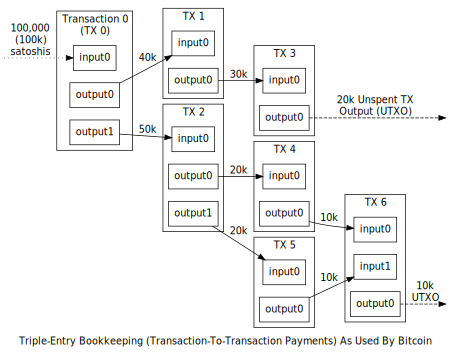
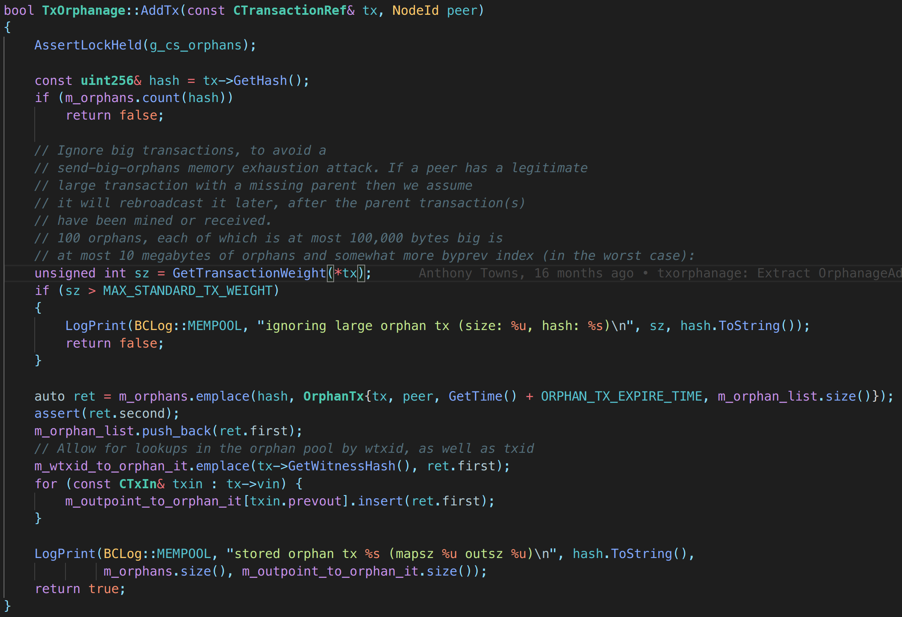
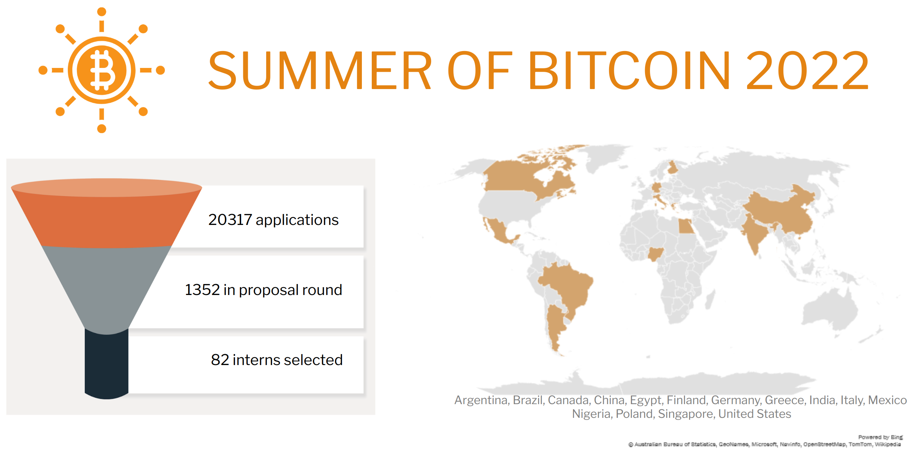
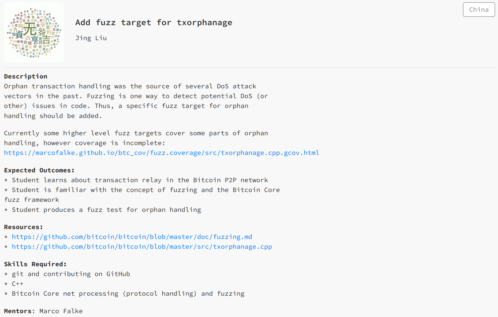

Bitcoin Orphan Transaction and its vulnerabilities
in 5 minutes
by chinggg
2022.5.30
Blockchain and Transaction
Block = Header + Transactions

Transaction = inputs + outputs

What is Orphan Transaction?
We are not talking about stale blocks
- successfully mined blocks that are not on the current best block chain
- will be rejected by the network so they are often called orphan
- but technically they still have valid parents and should be defined as stale blocks
orphan blocks
- blocks whose previous hash field points to unknown blocks
- parent blocks have not been processed since P2P networks do not preserve order
- cannot be fully validated yet
orphan transactions
- have parent transaction which cannot be found in chain or mempool
- cannot be fully validated yet
- should be stored for later processing
Bitcoin Core and
CVE-2012-3789
the reference implementation

Bitcoin as a Software
- Software have bugs
- Bitcoin is a software
- Bitcoin has bugs
How to handle orphan transactions?
- When new orphan transaction comes, store it in a “list”
- When new non-orphan transaction comes, go though the orphan list
- there may be a transaction who can be “unorphaned”
- Recursively “unorphaning” transactions in the list

CVE-2012-3789
- limitless orphan transactions allowed DoS attack
- memory/CPU exhaustion can happen on clients
- Fix: a number/size threshold on the orphan store

Future Work


Thanks for reading!
References:
[1] M. A. Imtiaz, D. Starobinski, and A. Trachtenberg, “Characterizing Orphan Transactions in the Bitcoin Network,” in 2020 IEEE International Conference on Blockchain and Cryptocurrency (ICBC), May 2020, pp. 1–9.
[2] A. Groce, K. Jain, R. van Tonder, G. Tulajappa, and C. L. Goues, “Looking for lacunae in bitcoin core’s fuzzing efforts,” in International Conference on Software Engineering, 2022